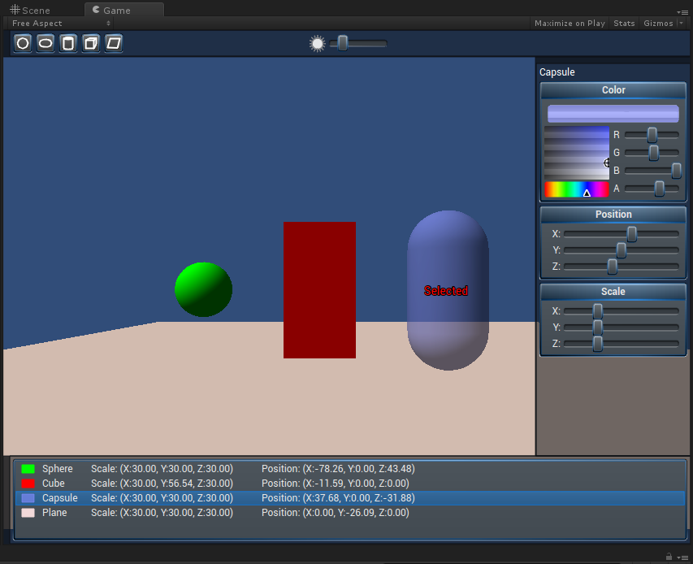
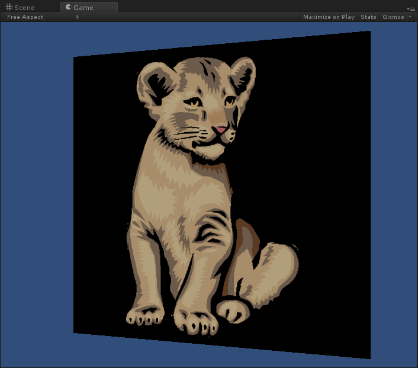

Using NoesisGUI within Unity
Steps needed to render user interfaces using NoesisGUI in Unity are described in this tutorial. It is recommended that you read the rest of tutorials to have familiarity with the basic concepts of Xaml and NoesisGUI architecture. This document is structured as follows:
- How to install NoesisGUI in Unity
- How data is organized
- Configuring NoesisGUI
- Steps to add new resources to your project
- How to attach a .xaml to a camera
- Render to Texture
- How to implement code behind in Unity
- Extra instructions for building on iOS and Android
Several of these steps are shown in this Video tutorial.
Installation
The first thing is installing the provided NoesisGUI-X.X.X.XXXX.unitypackage into your Unity project. You can do this by clicking on the Unity menu option
Assets -> Import Package -> Custom Package...
and selecting the file NoesisGUI-X.X.X.XXXX.unitypackage that you have downloaded from our web page.

Directory Structure
After importing the package into the project, the following directories appear inside the Assets/ folder:
- Editor/NoesisGUI: contains all the scripts and tools that are used while in Unity Editor.
- NoesisGUI/Doc: with all the documentation corresponding to NoesisGUI, including this document.
- NoesisGUI/Samples: our demo scenes showing different features of NoesisGUI.
- NoesisGUI/Themes: sample themes for styling your controls.
- Plugins: root folder that stores libraries and scripts that are needed in runtime for each platform.
- StreamingAssets/NoesisGUI: contains the preprocessed resources to be used in runtime by each platform. This folder is copied entirely to the standalone executable. For now, there is no filtering implemented. To reduce the size of the final distributable it is recommended to prune the unused folders in the standalone, not in this directory because the content would be lost.
Configuring NoesisGUI
The integration of NoesisGUI inside Unity provides automatic resource building. This means that you don't have to use external tools to prepare the resources for runtime. Each time you add, delete, move or edit a .xaml or .font the data base is updated accordingly.
You only have to indicate the desired platforms. The corresponding platform must be active before generating the standalone package. Note that DX9 or GL should be always selected because it is the platform used by the Unity editor.
Error and warning are displayed in the Unity console. It is very important to have this window visible while you are importing or editing resources.
Apart from the console, each component displays errors and warning corresponding to the .xaml being attached to it.
Note
For now only DirectX9, OpenGL, iOS and Android platforms are supported.
Adding new resources
You are free to put resources in any place inside the project /Assets folder. Next to each resource a .make file is automatically generated to track the resource.
There are two types of resources recognized by NoesisGUI:
- .xaml: generated by your favorite or by hand. The unique restriction here is that Window or App classes cannot be used because the application is managed by Unity itself. The same for the Window, that is created by Unity.
- .font: a font resource is a text file with a list of file font references, one item per line. For example, Roboto.font contains:
Roboto-Regular.ttf
Roboto-Italic.ttf
Roboto-Bold.ttf
Roboto-BoldItalic.ttf
Note that referenced .ttf files must be found next to the .font file. The .font file can contain as many references as you wish, even a single one, but it is recommended that all the referenced files belongs to the same font family being that family the name of the .font file.
The above .font could be used this way:
<Grid>
<Button Content="Click Me!" FontFamily="Fonts/#Roboto" />
<Button Content="Click Me!" FontFamily="Fonts/#Roboto" FontWeight="Bold" />
</Grid>
Note that the reference to the font is relative to the location of the .xaml file. Here we are supposing that Roboto.font is located in the subfolder Fonts/ relative to the .xaml.
Referenced fonts must always be inside the project folder. Operating system fonts are not supported.
You might be wondering why images are not considered resources themselves. For example,
<Image Source="Images/Icon.png"/>
The reason is that images referenced by a xaml are all bundled together within the .xaml when being preprocessed for runtime. This is a behavior that may change in the future.
Camera Rendering
For rendering an user interface on top of a camera you must attach the Noesis GUIPanel component to that camera.
With the component attached, inspect the object to display its options.
These are the fields exposed by every NoesisGUI component:
- Xaml: This field contains the interface resource that will be loaded when game is played. Any .xaml from the project folder can be dragged here. Note that only xamls with a FrameworkElement derived root can be rendered.
- Style: A xaml resource that describes how different controls (Buttons, CheckBoxes, ListBoxes, etc) are visually represented. Several themes are provided inside Assets/NoesisGUI: NoesisStyle, SimpleStyle and WindowsStyle.
- Antialiasing: Defines the desired antialiasing technique. The MSAA option renders using the multisampling antialiasing algorithm that is implemented by moderns GPUs. In case this option is not available or its performance is not acceptable the PPA option can be used. PPA implements antialiasing by extruding the contours of the triangles smoothing them. Shapes are slightly altered by this technique though.
- Quality: Adjusts the number of polygons that are generated when curve paths are tessellated. The default quality provides an error inferior to 0.5 pixels.
- Offscreen resolution: Specifies offscreen surfaces resolution relative to main surface. For example, a Offscreen Width 2 indicates that offscreen surfaces will dobule the width of the main window. Offscreen surfaces are used for opacity groups and visual brushes. A 0 size disables this feature. By default, it is 1. Normaly, two offscreen surfaces are created.
- Real Time Clock: When enabled, Time.realtimeSinceStartup is used instead of Time.time for animations. This can be used, for example, to make a user interface that is not affected by game slow motions.
Once you have set a valid xaml file press the Play button in the Editor and the Game View will render your scene, and on top of it, the selected UI resource.
Render to Texture
Sometimes you don't want the user interface to be directly rendered to the screen or camera. NoesisGUI supports rendering XAML to textures that are mapped to the mesh of an object. For that purpose you must create a Unity RenderTexture.
Note
For masking, NoesisGUI needs an active stencil buffer. This can be activated in Unity by selecting a 24-bits Depth Buffer.
This texture must be used by one of the materials of the Mesh, a Cube, in this example.
And finally, the NoesisGUI component must be attached to the object. Once this have been done, the .xaml will be rendered onto the texture the next time you hit Play.
If you want to interact with the GUI rendered in the texture, your GameObject must have a MeshCollider so texture coordinates can be obtained when doing the hit testing.
Attaching to Events
In contrast with the native version of NoesisGUI, .xaml resources in Unity does not support Code-Behind classes automatically. But it can be easily emulated by a script that in the Start() function caches the named nodes and attaches to desired events.
Note
Code-Behind classes will be implemented in a future version.
If you want to react to user interface events you need to create a script component and attach it to your GameObject. For example, let's attach the CodeBehind.cs script:
Next thing you probably want is caching "interesting" nodes inside your script. This can be done using the FindName() function. Best place for this code is inside the Start() function provided by the base class MonoBehaviour.
using UnityEngine;
using Noesis;
public class CodeBehind : MonoBehaviour
{
Button _button;
Slider _slider;
void Start()
{
// Access to the NoesisGUI component
NoesisGUIPanel noesisGUI = GetComponent<NoesisGUIPanel>();
// Obtain the root of the loaded UI resource, in this case it is a Grid element
Grid grid = noesisGUI.GetRoot<Grid>();
// Store references to important elements for future use
_button = grid.FindName<Button>("Button1");
_slider = grid.FindName<Slider>("Delay");
}
}
Binding to events exposed by each control is done through delegates.
using UnityEngine;
using Noesis;
public class CodeBehind : MonoBehaviour
{
Button _button;
Slider _slider;
void Start()
{
// Access to the NoesisGUI component
NoesisGUIPanel noesisGUI = GetComponent<NoesisGUIPanel>();
// Obtain the root of the loaded UI resource, in this case it is a Grid element
Grid grid = noesisGUI.GetRoot<Grid>();
// Store references to important elements for future use
_button = grid.FindName<Button>("Button1");
_slider = grid.FindName<Slider>("Delay");
// Bind to button click event
_button.Click += this.OnButtonClick;
}
void OnButtonClick(BaseComponent sender, RoutedEventArgs args)
{
Debug.Log("Button was clicked");
}
}
Hit Testing
In some situations it is necessary to check if mouse is over or was clicked over any element of the UI. This can be done with the Hit Testing method available through the VisualTreeHelper class.
Here is an example where a Collider mouse event was received and we want to find out if we should discard it because any UI element could have been clicked before:
using UnityEngine;
using Noesis;
public class HitTestSample : MonoBehaviour
{
Visual _root;
void Start()
{
var gui = GetComponent<NoesisGUIPanel>();
this._root = gui.GetRoot<Visual>();
}
void OnMouseDown()
{
Vector3 mousePos = Input.mousePosition;
Point point = new Point(mousePos.x, Screen.height - mousePos.y);
HitTestResult hit = VisualTreeHelper.HitTest(this._root, point);
if (hit.visualHit == null)
{
// No UI element was hit
// ...your code here
}
}
}
Software Keyboard
When using a mobile/touch platform a software keyboard is used to generate the input keys that are sent to the application. NoesisGUI uses the TouchScreenKeyboard provided by Unity to open the software keyboard when a TextBox or PasswordBox gets the application focus. The default software keyboard manager is exposed by NoesisGUISystem:
public class SoftwareKeyboardManager
{
// Called when a UI element gets the focus and software keyboard should be opened
protected virtual void OnShowKeyboard(Noesis.UIElement focusedElement);
// Override if you want to open the software keyboard for a TextBox with your own options
protected virtual TouchScreenKeyboard OpenTextBoxKeyboard(Noesis.TextBox textBox);
// Override if you want to open the software keyboard for a PasswordBox with your own options
protected virtual TouchScreenKeyboard OpenPasswordBoxKeyboard(Noesis.PasswordBox passwordBox);
// Called when UI element loses focus and software keyboard should be closed
protected virtual void OnHideKeyboard();
// Called to update focused UI element text
protected virtual void OnUpdateText();
// Indicates if software keyboard is open
protected virtual bool IsOpenOverride();
}
The user can override the default behavior by providing its own SoftwareKeyboardManager:
public class AppKeyboardManager : Noesis.SoftwareKeyboardManager
{
protected override TouchScreenKeyboard OpenTextBoxKeyboard(Noesis.TextBox textBox)
{
if (textBox.GetName() == "emailField")
{
return TouchScreenKeyboard.Open(textBox.GetText(),
TouchScreenKeyboardType.EmailAddress);
}
else
{
return base.OpenTextBoxKeyboard(textBox);
}
}
}
public class AppLogic : MonoBehaviour
{
// Use this for initialization
void Start ()
{
NoesisGUISystem.SoftwareKeyboardManager = new AppKeyboardManager();
}
}
Building on iOS
The process of building for iOS is not as straightforward as on Windows or OS X. Unity generates a XCode project that needs to be modified to incorporate NoesisGUI. Each time any Unity content changes the XCode project needs to be regenerated before it can be viewed on the iOS device. The steps to follow are:
- Select File -> Build Settings...
- Select the Scenes to be deployed
- Select platform iOS
- Adjust the desired Player Settings (Resolution, Icons, Splash Image...). Make sure that Target iOS Version is at least 5.0. NoesisGUI is not compatible with previous iOS versions. Graphics Level must be set to OpenGL ES 2.0
- Click the Build button
- Select the location where you want to save the XCode project
- If the project already exists a warning appears indicating if you want to Append or Replace. Select Append to avoid losing changes done on the XCode project.
- Open the XCode project
Note
This step is not longer necessary in Unity version 4.2 or above. To activate the stencil buffer in these versions you only need to activate a 24-bit Depth Buffer in the iOS Player Settings.
Note that when returning to the Unity Editor, iOS platform is left active and an error is notified indicating that iOS editor mode is not compatible with NoesisGUI. You must activate PC, Mac & Linux to continue working in the editor.
By default, Unity does not create a Stencil surface in iOS. As NoesisGUI renders masks using Stencil we need to modify the file GlesHelper.mm to activate this feature. Note that the changes are emphasized.
void CreateSharedDepthbuffer(UnityRenderingSurface* surface) { EAGLContextSetCurrentAutoRestore autorestore(surface->context); DestroySharedDepthbuffer(surface); //surface->depthFormat = surface->use24bitDepth ? GL_DEPTH_COMPONENT24_OES : GL_DEPTH_COMPONENT16_OES; surface->depthFormat = GL_DEPTH24_STENCIL8_OES; GLES_CHK(glGenRenderbuffersOES(1, &surface->depthRB)); GLES_CHK(glBindRenderbufferOES(GL_RENDERBUFFER_OES, surface->depthRB)); bool needMSAA = GL_APPLE_framebuffer_multisample && (surface->msaaSamples > 1); #if GL_APPLE_framebuffer_multisample if(needMSAA) GLES_CHK(glRenderbufferStorageMultisampleAPPLE(GL_RENDERBUFFER_OES, surface->msaaSamples, surface->depthFormat, surface->targetW, surface->targetH)); #endif if(!needMSAA) GLES_CHK(glRenderbufferStorageOES(GL_RENDERBUFFER_OES, surface->depthFormat, surface->targetW, surface->targetH)); GLES_CHK(glFramebufferRenderbufferOES(GL_FRAMEBUFFER_OES, GL_DEPTH_ATTACHMENT_OES, GL_RENDERBUFFER_OES, surface->depthRB)); GLES_CHK(glFramebufferRenderbufferOES(GL_FRAMEBUFFER_OES, GL_STENCIL_ATTACHMENT_OES, GL_RENDERBUFFER_OES, surface->depthRB)); }
- Optimize deployed data
By default all the directory /Assets/StreamingAssets of the Unity project is deployed to the device. Unity copies the entire directory to the /Raw folder of the XCode project. If you want to optimize the data that is copied to the device it is recommended to leave only the IOS folder in the ($XCODE_PROJECT_DIR)/Data/Raw/NoesisGUI/Data folder.
- Build and Run the project from XCode
Building on Android
The process of building for Android is very simple, only a few settings should be taken into account. The steps to follow are:
- Optimize deployed data
By default all the directory /Assets/StreamingAssets of the Unity project is deployed into the .apk package. If you want to optimize the data that is copied to the device it is recommended to select only the Android platform under Window -> NoesisGUI -> Settings window and click the Build button before you start the Unity building process.
- Select File -> Build Settings...

- Select the Scenes to be deployed
- Select platform Android
- Adjust the desired Player Settings (Resolution, Icons, Splash Image...). Make sure that Minimum API Level is at least Android 2.3.3 'Gingerbread'. NoesisGUI is not compatible with previous Android versions. Graphics Level must be set to OpenGL ES 2.0.
- Click the Build button
- Select the location where you want to save the .apk file
- Install the .apk into your Android device and Run it
You can also generate an Eclipse project to extend your application. In that case the steps are the following:
- Select File -> Build Settings...
- Select the Scenes to be deployed
- Select platform Android
- Adjust the desired Player Settings (Resolution, Icons, Splash Image...). Make sure that Minimum API Level is at least Android 2.3.3 'Gingerbread'. NoesisGUI is not compatible with previous Android versions. Graphics Level must be set to OpenGL ES 2.0
- Click the Export button
- Select the location where you want to store the Eclipse project
- Optimize deployed data
By default all the directory /Assets/StreamingAssets of the Unity project is deployed to the assets/ folder of the Eclipse project. If you want to optimize the data that is copied to the device it is recommended to leave only the ANDROID folder in ($ECLIPSE_PROJECT_DIR)/assets/NoesisGUI/Data/ folder.
- Build project with Eclipse to generate the .apk file
- Install the .apk into your Android device and Run it